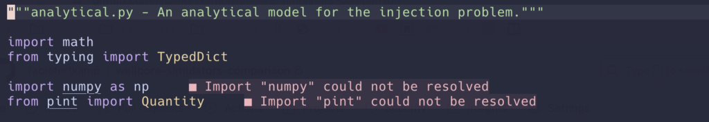

The problem
If you are a nerd like me, you probably have joined the Neovim cult and have spent more hours configuring it than you care to admit.
Then you might also have spent digging around Python project managers and settled on using Hatch for one of your projects. In principle, this means you do not have to manually create environments. You define dependencies in pyproject.toml and, when executing Hatch scripts, the hatch program will create environments, install dependencies and execute the commands (like running tests, linting, formatting etc) inside those environments.
But now, when you write Python code on Neovim, using the standard pyright as the language server (I use the Python-ruff pack from the AstroNvim communtity), if you use the same packages you define in the dependencies section (and which are not installed in your global Python environment), pright will complain that it cannot find packages:

How can it not find packages when you declared everything in the pyproject.toml file, and everything is supposed to be downloaded and installed automatically?
The solution
You need to tell pyright where to find environments in which the packages are installed; then, pyright will recognized installed Python packages as something you can import from. In other words: pyright needs to be aware of your Hatch environments.
It might help to first configure hatch itself to use a directory for the virtual environments that are easy to find. I like to use a .hatch subfolder in my project root folder (don’t forget to exclude it from source control). You can change the global hatch configuration to always use that location when using the hatch command with this shell commands:
hatch env prune # delete previously created environments
hatch config set dirs.env.virtual ".hatch" # modify configurationNow, when you run a hatch command, it will create environments under .hatch.
Now you have to configure pyright in your pyproject.toml file. Suppose you define a dev environment in which to run various checks like this:
# pyproject.toml
[tool.hatch.envs.dev]
python = "3.11"
dependencies = ["mypy>=1.0.0", "pytest", "ruff"]
[tool.hatch.envs.dev.scripts]
check = [
"pytest -xvv --ff",
"ruff format .",
"ruff check .",
]This way, you can also create a environment, install your package and run all tests with:
hatch run dev:checkNow, include the following configuration:
# pyproject.toml
[tool.pyright]
executionEnvironments = [{ root = "src" }]
venvPath = ".hatch"
venv = "dev"Restart your neovim, and you will see that the messages above disappear: pyright will get all package information from <your project folder>/.hatch/dev/. As a bonus, you can import pytest in the test files to add fixtures and other goodies.
I hope this is helpful! Let me know if you want to learn more about Hatch or Neovim.